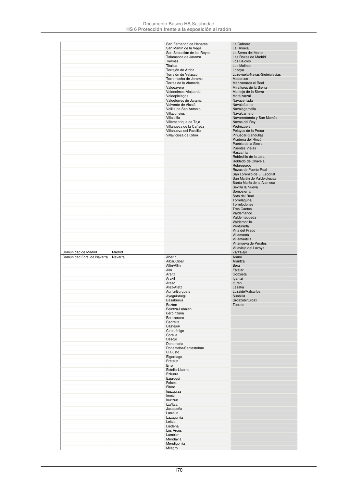

DB-HS Salubridad · edición 2022-06-14 · capa oficial
Documento DB-HS-oficial · SHA-256 del PDF 68df3caacc95f71aee2ec1ba7b2c65ae66155c21e3a8785521b8fdd4fd640d3b
Página física 170 de 184.
Copia fiel del PDF fuente · Fuente oficial
Ficha de la disposición en la fuente oficial
Formato: Texto de la página (Markdown)
Documento Básico HS Salubridad HS 6 Protección frente a la exposición al radón 170 San Fernando de Henares La Cabrera San Martín de la Vega La Hiruela San Sebastián de los Reyes La Serna del Monte Talamanca de Jarama Las Rozas de Madrid Tielmes Los Baldios Titulcia Los Molinos Torrejón de Ardoz Lozoya Torrejón de Velasco Lozoyuela-Navas-Sieteiglesias Torremocha de Jarama Madarcos Torres de la Alameda Manzanares el Real Valdeavero Miraflores de la Sierra Valdeolmos-Alalpardo Montejo de la Sierra Valdepiélagos Moralzarzal Valdetorres de Jarama Navacerrada Valverde de Alcalá Navalafuente Velilla de San Antonio Navalagamella Villaconejos Navalcarnero Villalbilla Navarredonda y San Mamés Villamanrique de Tajo Navas del Rey Villanueva de la Cañada Pedrezuela Villanueva del Pardillo Pelayos de la Presa Villaviciosa de Odón Piñuécar-Gandullas Prádena del Rincón Puebla de la Sierra Puentes Viejas Rascafría Robledillo de la Jara Robledo de Chavela Robregordo Rozas de Puerto Real San Lorenzo de El Escorial San Martín de Valdeiglesias Santa María de la Alameda Sevilla la Nueva Somosierra Soto del Real Torrelaguna Torrelodones Tres Cantos Valdemanco Valdemaqueda Valdemorillo Venturada Villa del Prado Villamanta Villamantilla Villanueva de Perales Villavieja del Lozoya Comunidad de Madrid Madrid Zarzalejo Comunidad Foral de Navarra Navarra Aberin Arano Aibar/Oibar Arantza Allín/Allin Bera Allo Etxalar Araitz Goizueta Arakil Igantzi Areso Ituren Atez/Atetz Lesaka Auritz/Burguete Luzaide/Valcarlos Ayegui/Aiegi Sunbilla Basaburua Urdazubi/Urdax Baztan Zubieta Beintza-Labaien Berbinzana Bertizarana Cadreita Castejón Cintruénigo Corella Desojo Donamaria Doneztebe/Santesteban El Busto Elgorriaga Eratsun Erro Estella-Lizarra Ezkurra Ezprogui Falces Fitero Igúzquiza Imotz Irurtzun Iza/Itza Juslapeña Larraun Lazagurría Leitza Liédena Los Arcos Lumbier Mendavia Mendigorría Milagro

Datos candidatos: compruebe celdas y notas en el PDF.